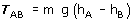
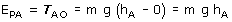
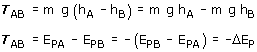

Trabajo del campo gravitatorio (Cerca de un planeta)
Si la masa m se mueve cerca de un planeta, desde un punto A hasta otro B el trabajo que realiza la fuerza gravitatoria vendrá dado por:

g |
Intensidad de campo en la superficie del planeta |
m |
Masa que se mueve |
hA |
Altura del punto de partida respecto a la superficie |
| hB |
Altura del punto de llegada respecto a la superficie |
Un trabajo positivo significa que la masa m realizará sola el des-plazamiento ganando velocidad. Un trabajo negativo significa que la masa m no realizará sola el desplazamiento, habrá que llevarla o lanzarla con velocidad suficiente
Cuando algún punto esté por debajo de la superficie se conside-rará negativa su altura
Energía potencial (Cerca de un planeta)
Se define energía potencial de una masa m colocada en un pun-to A, como el trabajo que hace el campo gravitatorio cuando la masa m se desplaza desde dicho punto A hasta la superficie (Origen de potencial)

Importante
El trabajo del campo es igual a la variación
de energía potencial cambiada de signo

Potencial (Cerca de un planeta)
Se define potencial en un punto A de un campo gravitatorio co-mo el trabajo que hace el campo por cada unidad de masa (kg) que se desplaza desde dicho punto A hasta la superficie (Origen de potencial)
El potencial en un punto A se obtiene dividiendo la energía po-tencial de una masa m, colocada en dicho punto, entre la propia masa